Interaction nets are a graph rewriting system.
Interaction nets can capture all computable functions with rewriting rules, no external machinery such as copying a chunk of memory, or a garbage collector, is needed. Unlike models such as Turing machines, Lambda calculus, cellular automata, or combinators, an interaction net computational step can be defined as a constant time operation, and the model allows for parallelism in which many steps can take place at the same time.
1. Agents
An agent(a) is a cell that has one principal port and a number of auxiliary ports(n). A pair of agents connected together on their principal ports is called an active pair. Graphically, principal ports are distinguished by arrows(triangles).
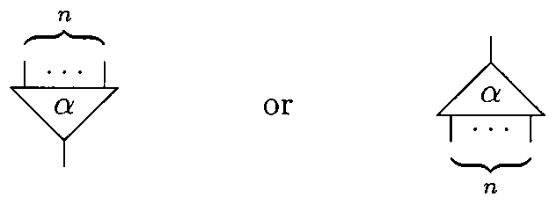The examples on this page will make use of four agents: Successor(increments a natural number), Zero, Add & Mul.
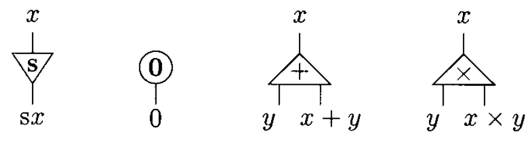2. Interaction Nets
A net is an undirected graph of agents where each port is connected to another one by means of a wire. The following net has three free ports, x, y, and z. Note that a wire may connect two ports of the same agent. A rewriting of a net is performed only on an active pair according to an interaction rule.
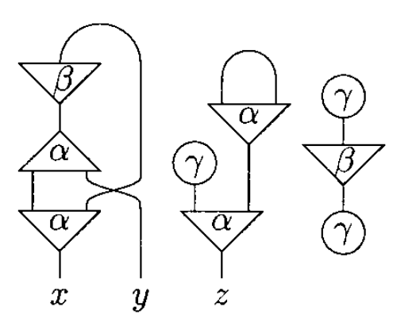3. Rewriting Rules
Here, rewriting is just a convenient word to express a very concrete notion of interaction, which we shall make precise by requiring some properties of rules:
- Agents interact only through their principal port.
- Each variable in a rule occurs exactly twice, once on each side.
- There is at most one rule for each pair of distinct symbols.
In an agent definition, the first port is the principal port, the rest of the ports are listed in the order obtained by moving anticlockwise round the agent. The following definition follows the interaction net at the left side of the rule 2 figure.
{kind=link}
Net: Add(u,y,z), S(u,x)
| Rule 1 | Rule 2 |
|---|---|
| 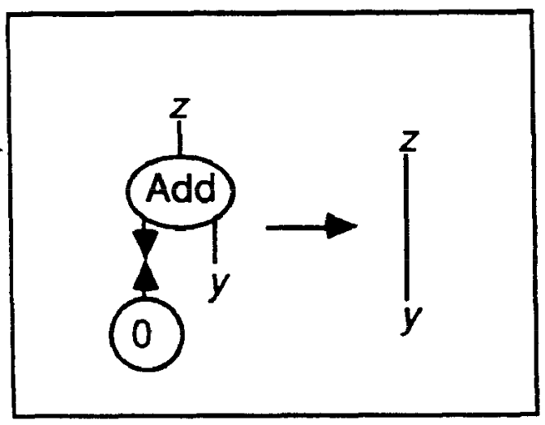 | 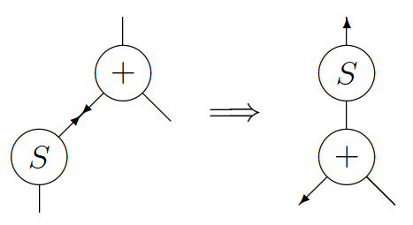 |
In the following notation, an interaction rule consists of a pair of net descriptions separated by an arrow. Agents are capitalized, and free ports are lowercase.
Rules: Add(u,y,z), Z(u) --> z-y Add(u,y,z), S(u,x) --> S(z,w), Add(x,y,w)
An interaction net to compute the result of 1 + 1 with the rules defined above, is shown below, where one active pair has been generated. We then show two reductions, which use the previous two rules. The final net, on the right-hand side, is of course the representation of 2, which is the expected answer.
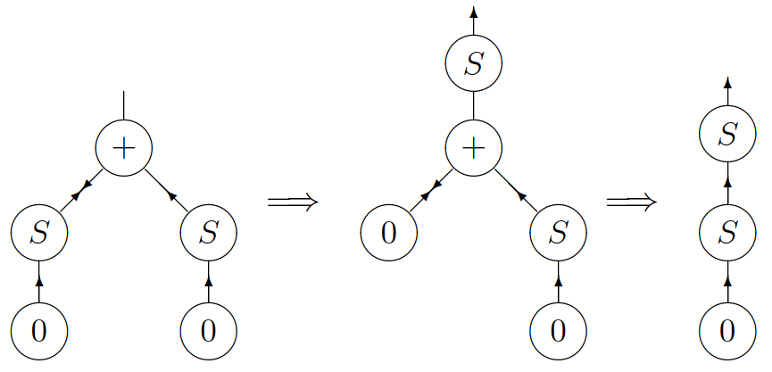Programming
From now on, we will use Inpla's notation for rules in which the principal ports are taken out of the brackets and their equivalent connection written as ><. When an agent has an arity of 0, the brackets are removed altogether. Thus, we can write the entire addition program as:
Rules: add(y, z) >< Z => y~z; add(y, z) >< S(x) => add(y, S(z))~x; Exec: add(res,S(Z))~S(S(Z)); 1 + 2 res; Result: S(S(S(Z))), or 3
When defining multiplication, note that the argument y is used twice in the first equation, and it is not used at all in the second one. For that reason, two extra symbols are needed duplicate and erase.
sx * y = (x * y) + y 0 * y = 0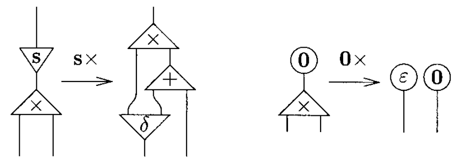
The idea is that a net representing a natural number should be duplicated when it is connected to the principal port of a duplicate, and it should be erased when it is connected to the principal port of an erase.
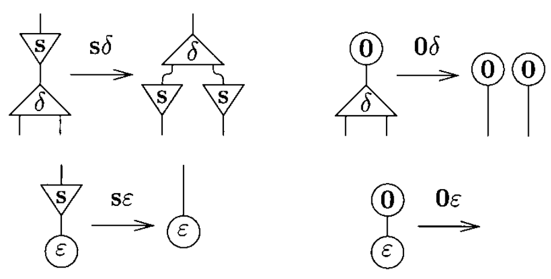The system of interaction combinators consists of three symbols, called combinators: y(constructor), d(duplicator), and e(eraser). The six interaction rules below are of two kinds: commutation when the two cells carry different symbols (yd, ye, de) and annihilation when they carry the same symbol (yy, dd, ee).
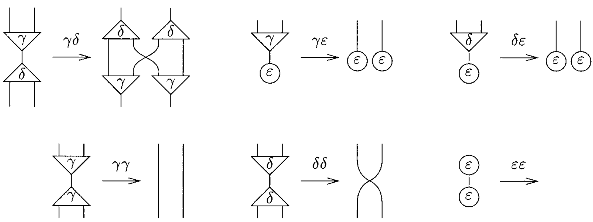Note that the annihilations for y and d are not the same. Furthermore, if one numbers the auxiliary ports, one realizes that it is yy, not dd, which exchanges the ports:
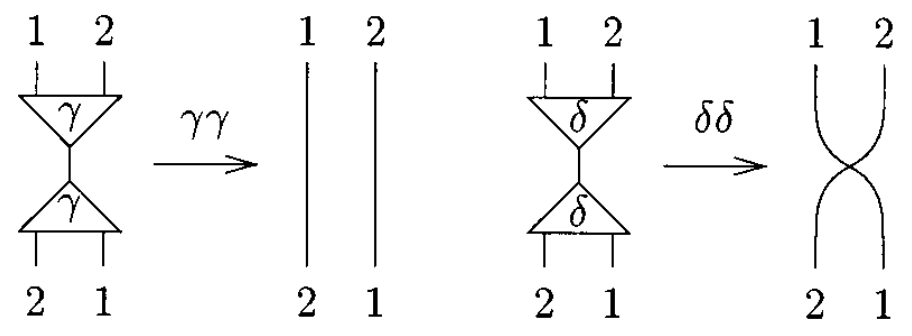The fundamental laws of computation are commutation and annihilation.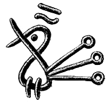
- Interaction Nets
- Interaction Combinators
- Implementation of a low-level language for interaction nets, Shinya Sato
- Inpla, Interaction Nets as Programming Language
- Towards a Programming Language for Interaction Nets, Ian Mackie
- An Implementation Model for Interaction Nets
- ia2d, haskell.
- Interaction Nets Playground
- Bologna Optimal Higher-Order Machine